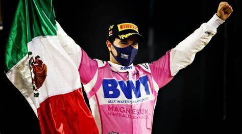
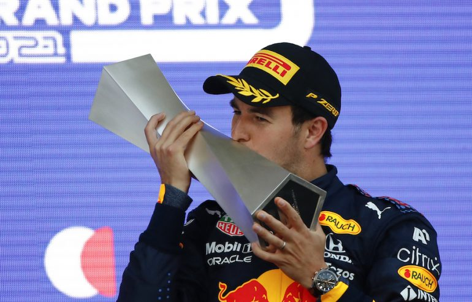

Sergio Pérez
Mexican F1 Driver
Pérez was a member of the Ferrari Driver Academy until 2012.
He made his Formula One debut driving for Sauber during the 2011 season.
He took his first Formula One podium at the 2012 Malaysian Grand Prix with Sauber.
Due to his young age and performance, he was referred to as "The Mexican Wunderkind".
Pérez joined McLaren for the 2013 season, but the team did not score a single podium finish.
Subsequently, for the 2014 season, the team decided to replace Pérez with Kevin Magnussen
First Win
2020 Sakhir Grand Prix
.
.
.
.
.
.
.
.
Second Win
2021 Azerbaijan Grand Prix
